原文连接:https://www.cnblogs.com/lixinjie/p/taste-spring-007.html
别看Spring现在玩的这么花，其实它的“筹码”就两个，“容器”和“bean定义”。
只有先把bean定义注册到容器里，后续的一切可能才有可能成为可能。
所以在进阶的路上如果要想走的顺畅些，彻底搞清楚bean定义注册的所有细节至关重要。
毕竟这是万里长征的第一步。有句话怎么说来着，“勿在浮沙筑高台”。
Spring步入注解和Java配置的时代也有些时日了。而且也旗帜鲜明的表达了bean的注册方法。
这不，就是这个接口，AnnotationConfigRegistry，如下图01：
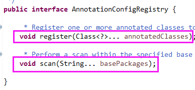
再来看下这个接口的名字，有三个单词组成，Annotation、Config、Registry。
第一个表示注解，第二个表示Java配置，第三个表示注册。
合起来的意思可以理解为，基于注解和Java配置的bean定义注册。当然，这是我猜的，哈哈哈。
这是一个很牛X的接口，理由见下图02：
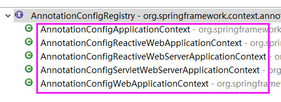
纳尼，所有的容器类都实现了它。
不管是web的、非web的，传统Spring的、SpringBoot的，响应式的、Servlet的。
简直是老少通吃、妇孺皆宜啊。淡定、淡定。
这个接口的两个方法非常简约：
一个是直接把一个类（Class<?>）进行注册。
一个是通过扫描指定的包（Package）里的类进行注册。
请注意我刚刚使用了“简约”而没有使用“简单”，因为简约往往并不等于简单，反而更多时候等于难。
讲了这么多，终于可以让今天的主角登场了，来来来，掌声响起来。
就是这两个类：
AnnotatedBeanDefinitionReader
ClassPathBeanDefinitionScanner
第一个类就是站在接口第一个方法register背后默默付出的。
第二个类就是负责搞定接口第二个方法scan后面所有事情的。
下面开始进行具体的讲解，只需要知道都干了什么即可，至于怎么干的，不需要了解。
看第一个类，如下图03：
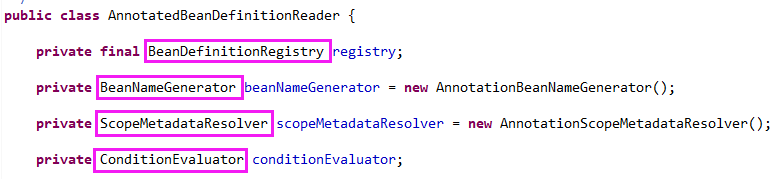
第一个字段类型是BeanDefinitionRegistry，这是容器（或bean factory）会实现的接口。
用于把一个BeanDefinition（bean定义）注册到容器中，看下它的这个方法，如下图04：
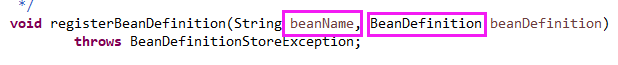
编程新说注：对“bean定义”这个概念不清楚的，可以在文末查看本系列《品Spring》文章的头几篇。
刚刚应该看到在注册bean定义时需要一个bean名称（即beanName），因此该第二个字段发挥作用了。
它就是BeanNameGenerator。例如，有一个类是UserController，它上面标了注解@Controller("user")。
首先它会把注解的value属性作为名称，此时就是user啦。
如果没有指定value属性，就像这样@Controller，此时就是类的短名称且首字母小写，即userController。
这就是bean名称的生成策略，在实际开发中不就是这样的嘛。
第三个字段是ScopeMetadataResolver，是来决定bean实例的范围（即生命周期）的。
常见的生命周期有四种，PROTOTYPE（原型）、SINGLETON（单例）、REQUEST（请求）、SESSION（会话）。
就是通过检查类上有没有@Scope这个注解。如果有的话，就按指定的走，没有的话，就按单例走。
第四个字段是ConditionEvaluator，条件计算器，根据“条件”判断一个bean定义该不该被注册。
这可是SpringBoot自动配置（AutoConfiguration）的基石啊。
就是去检测类上有没有标@Conditional这个注解。如果没有的话，bean定义会被注册。
如果有的话，需要再去计算具体的“条件”，然后才能确定bean定义到底要不要注册。
哎呀，注册一个bean定义好麻烦啊，喘口气，继续吧。嘿嘿。
下面开始真正进入注册的方法，先看下方法的参数吧，如下图05：
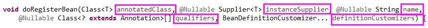
方法共有5个参数，只有第一个是必须的，后面的都可以为空。
第一个参数，annotatedClass，是Class<?>，表示要被注册的类。
第二个参数，instanceSupplier，是一个函数式接口，Supplier<T>，可以提供这个bean的实例对象，这样就不再需要通过反射调用构造函数了。
第三个参数，name，bean名称，如果传的话就不用再生成了。
第四个参数，qualifiers，是一组用作限定修饰符的注解，Class<? extends Annotation>[]。
第五个参数，definitionCustomizers，是一组可以自定义bean定义的接口，BeanDefinitionCustomizer。
整个处理过程分为九步，如下图06：
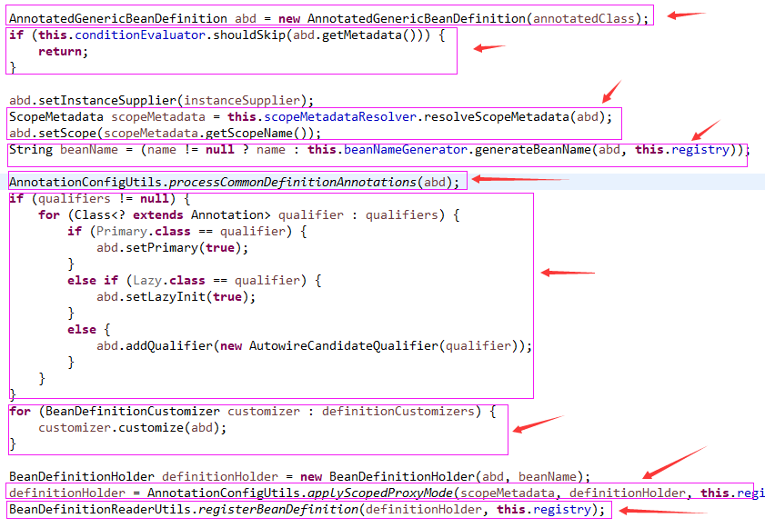
第一步，先把类转变为bean定义，即把Class<?>转变为BeanDefinition。具体是AnnotatedGenericBeanDefinition这个类。
第二步，使用条件计算器来确定是否要注册这个bean定义。
第三步，确定这个bean的生命周期。
第四步，确定这个bean的名称。
第五步，处理定义的公共注解信息。如下图07：
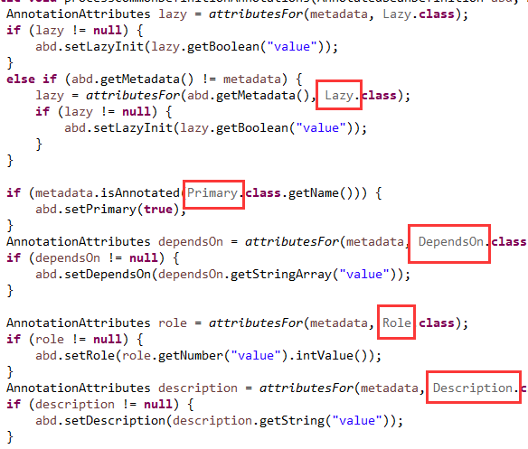
就是@Lazy、@Primary、@DependsOn、@Role、@Description这五个注解。
从类上分别获取这些注解，然后从注解中读出需要的信息，再把这些信息设置到bean定义中。
第六步，处理限定修饰符，就是@Primary、@Lazy、@Qualifier这三个注解。
这个几个注解是从方法参数传入的，上一步的注解是从类上读取的，它们不重复也不冲突。
编程新说注：这些注解的含义和用法，这里就不说了，毕竟这是“追求深度”的文章。
第七步，应用bean定义自定义器，对bean定义进行一些自定义。
第八步，根据bean的生命周期，使用AOP技术为该bean定义生成代理。
第九步，把这个bean定义注册到容器中。
这就是一个bean定义的完整注册过程。妈呀，让我歇会儿。
编程新说注：第二个类注册bean定义的整体逻辑和第一个类完全一样。只是获取bean定义的方式不同。
下面看第二个类，如下图08：
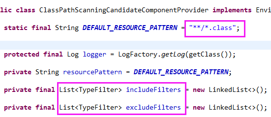
首先可以看到，它扫描的都是jar包中的.class文件。
然后还有两个过滤器集合，决定哪些被排除、哪些被包含。
当然，类中也给出了默认情况下包含的，如下图09：
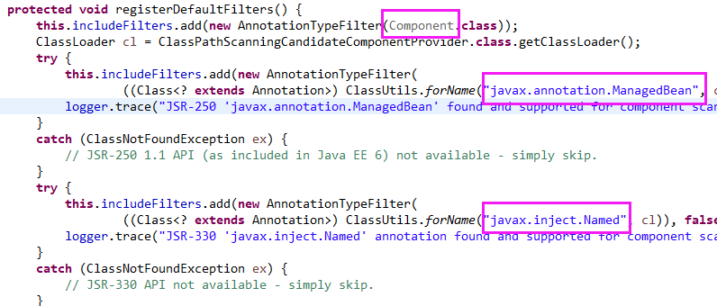
第一，@Component注解以及用它定义的其它注解，如@Configuration等。
第二，JSR-250里面的@javax.annotation.ManagedBean注解。
第三，JSR-330里面的@javax.inject.Named注解。
标了这三个注解的类都会被注册，第一个注解是Spring的，后两个是Java的。
默认情况下，排除过滤器没有指定，也就是不进行任何显式的排除。
具体收集bean定义的过程，分为七步，如下图10：
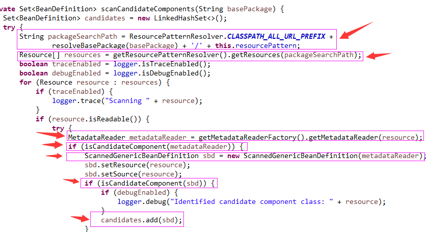
第一步，拼接资源路径，形式就是这样classpath*:org/cnt/ts/**/*.class。
它表示搜索类路径下所有的jar包里，以org/cnt/ts开头的包及其子包里的所有.class文件。
第二步，找出上一步中的那些.class文件，并把它们转化为资源，即Resource类。
第三步，使用ASM框架逐个读取这些资源（其实就是字节码文件啦）。
第四步，应用过滤器和条件计算器，来确定这个bean定义是否要被注册。
如下图11：
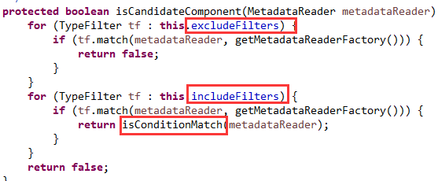
第五步，使用从字节码中读出的内容来构建BeanDefinition，使用的是ScannedGenericBeanDefinition这个类。
第六步，确认下这个类是否符合要求，如下图12：
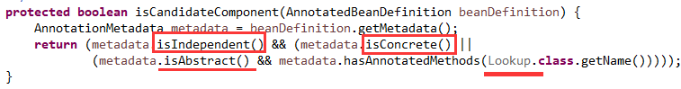
一共有三项检查：
第一，必须是独立的。可以是顶级类（非内部类），可以是静态内部类（即static class）。
第二，必须是具体的，即非抽象的。
第三，如果类是抽象的，它必须包含一个标有@Lookup注解的方法，来指定一个具体的bean。
第七步，收集好这个bean定义。
这些bean定义抽取好后，剩下的处理就和第一个类一样了。
如下图13：
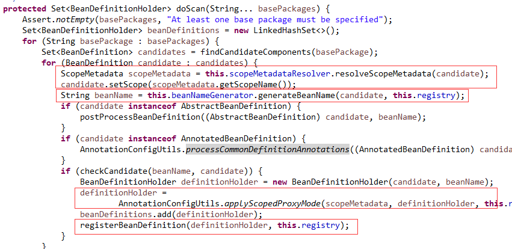
也是确定生命周期，生成bean名称，处理定义的公共注解信息，根据生命周期生成代理，最后注册到容器中。
最后声明一点：
以上两个类并不处理@Bean这个注解注册的bean定义，也不处理由@Import注解引入的bean定义。
哪谁处理呢？后续文章见。
>>> 品Spring系列文章 <<<
品Spring：SpringBoot和Spring到底有没有本质的不同？
作者是工作超过10年的码农，现在任架构师。喜欢研究技术，崇尚简单快乐。追求以通俗易懂的语言解说技术，希望所有的读者都能看懂并记住。下面是公众号和知识星球的二维码，欢迎关注！